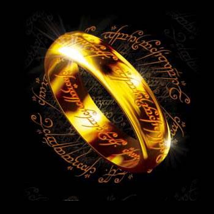

Tres Anillos para los Reyes Elfos bajo el cielo. Siete para los Señores Enanos en palacios de piedra. Nueve para los Hombres Mortales condenados a morir. Uno para el Señor Oscuro, sobre el trono oscuro en la Tierra de Mordor donde se extienden las Sombras. Un Anillo para gobernarlos a todos. Un Anillo para encontrarlos, un Anillo para atrerlos a todos y atarlos a las tinieblas en la Tierra de Mordor donde se extienden las Sombras. 